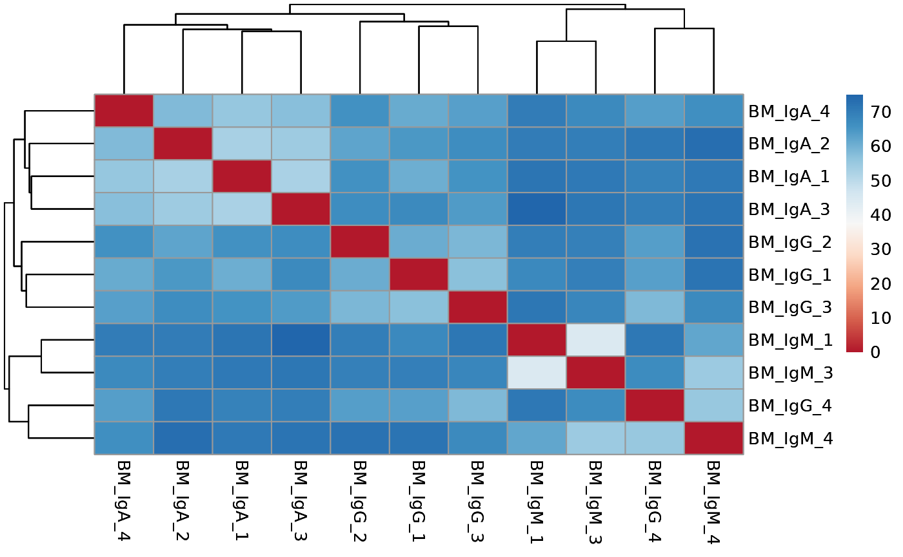
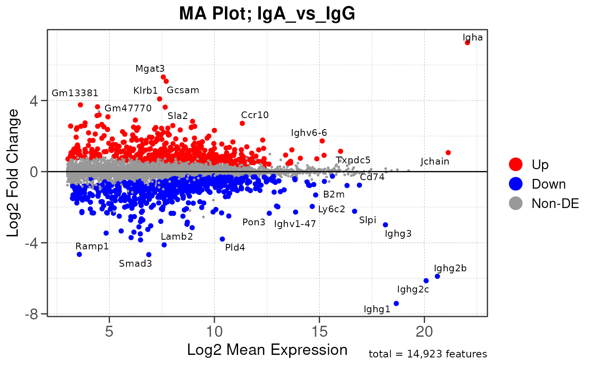

Advance Guide
Author: Matthew Hung
Last Updated: 2025/04/08
Source:vignettes/rna_guide.Rmd
rna_guide.RmdFirst, load the deseq2pip package:
## Warning: replacing previous import 'S4Arrays::makeNindexFromArrayViewport' by
## 'DelayedArray::makeNindexFromArrayViewport' when loading 'SummarizedExperiment'Data Import and Setup
Let’s import and prepare your data. We’ll use the example dataset GSE189410 to demonstrate the workflow:
# load example DESeq2 object
rdata <- system.file("data", "GSE189410.dds.RData", package = "deseq2pip")
tx2gene <- gzfile(system.file("data", "GSE189410.tx2gene.tsv.gz", package = "deseq2pip"))
dds <- import_nfcore_rna(rdata = rdata, tx2gene = tx2gene)
assay(dds)[1:5, 1:5]## BM_IgA_1 BM_IgA_2 BM_IgA_3 BM_IgA_4 BM_IgG_1
## 0610005C13Rik 18 8 18 11 12
## 0610006L08Rik 0 0 11 0 0
## 0610009B22Rik 102 93 124 128 126
## 0610009E02Rik 50 11 22 13 21
## 0610009L18Rik 5 10 3 4 3
# set group variable to compare between, with the first level set as the reference
dds$Group2 <- factor(dds$Group2, c('IgM', 'IgG', 'IgA'))
# set dds design with desired variables
# for more information about setting contrasts in DESeq2, see: https://github.com/tavareshugo/tutorial_DESeq2_contrasts?tab=readme-ov-file
design(dds) <- ~ Group2Run DESeq2 pipeline
The run_deseq2_pip() function is a wrapper function that runs the complete RNA-seq analysis for every comparison pair in the specified group variable.
The analysis for each comparison pair can be broken down into three modules:
- Quality Control: Filters genes, generates QC/PCA/distance plots, and saves expression data
- Differential Expression Analysis: Performs DESeq2 analysis, functional gene annotation, and creates volcano plots
- GSEA Analysis: Find enriched pathways using MSigDB collections and prepare results for EnrichmentMap visualization
For our example dataset, we hqf3 3 comparison pairs in the group
variable Group2: IgM vs IgG,
IgM vs IgA, and IgG vs
IgA.
Here’s how to run the complete pipeline with a single command: Note: Repeating run_deseq2_pip will overwrite the existing files if the same directory name is used. To prevent this, please specify a different save_dir directory.
# run deseq2 pipeline
#run_deseq2_pip(dds, experiment = "GSE189410", org = "mouse", group_by = "Group2", remove_xy = TRUE, remove_mt = TRUE, save_dir = "/Users/hungm/Documents/development/deseq2pip/tests/pipeline/")This will create a directory structure under the specified save
directory: * qc_results/ contains QC plots and expression data *
batch_corrected/ contains batch corrected plots and expression data *
Group2/ contains directories for each comparison pair
# show directory structure
#fs::dir_tree("/Users/hungm/Documents/development/deseq2pip/tests/pipeline/", recurse = 1)For each comparison pair, the directory contains: * diffexp_deseq2_wald.tsv: Dataframe of differential expression results and gene annotation * diffexp_volcano.pdf: Volcano plot of the differential expression results * outputs for each gene set collection (HALLMARK, GOBP, KEGG, REACTOME, TFT, BIOCARTA): * gsea_.rds: RDS file of gseaResult class object gsea_.tsv: TSV file of GSEA results gsea_*_barplot.pdf: Barplots for the top N terms from GSEA results
# show directory structure for a specific comparison pair
#fs::dir_tree("/Users/hungm/Documents/development/deseq2pip/tests/pipeline/Group2/IgA_vs_IgG/")Run individual modules
After an initial run of the DESeq2 pipeline, you may wish to run a specific module using different parameters or comparison groups without repeating the entire pipeline.
Here’s how to run each module separately.
# set global arguments
# save_dir <- "/Users/hungm/Documents/development/deseq2pip/tests/rnaseq/module/"
save_dir <- tempdir()
dir.create(save_dir, recursive = TRUE)## Warning in dir.create(save_dir, recursive = TRUE): '/tmp/RtmpktrRN0' already
## exists
group_by <- "Group2"
batch <- NULL
org <- "mouse"
group_dir <- paste0(save_dir, "/", group_by, "/")
# Module 1: Quality Control
#dds <- run_qc_pip(dds, experiment = "GSE189410", org = org, group_by = group_by, remove_xy = T, remove_mt = T, save_dir = save_dir)
#dds <- run_dist_pip(dds, experiment = "GSE189410", group_by = group_by, batch = batch, save_dir = save_dir)
# Module 2: Differential Expression Analysis
#res <- run_diffexp_pip(dds, org = org, group_by = group_by, save_dir = group_dir)
# Module 3: GSEA Analysis
#run_gsea_pip(res = res, org = org, save_dir = group_dir)Below is a breakdown of the list of processes performed in each module.
Module 1: Quality Control
The run_qc_pip() module contains a sequence of
subprocesses that performs quality control checks on the data.
Remove XY and MT genes
If your data contains samples taken from both males and females that
you are not interested in, you can optionally remove gender-specific
genes on X and Y chromosomes. This can be done with the
remove_xy_genes() function.
This is optional but recommended if you see a gender-specific effect in downstream PCA and distance analysis.
# remove XY genes (Optional)
dds <- remove_xy_genes(dds, org = "mouse")## Removing 4050 XY genes out of 54513 total genes...
dds## class: DESeqDataSet
## dim: 50463 11
## metadata(1): version
## assays(1): counts
## rownames(50463): 0610005C13Rik 0610006L08Rik ... snoZ159 snoZ196
## rowData names(1): gene
## colnames(11): BM_IgA_1 BM_IgA_2 ... BM_IgM_3 BM_IgM_4
## colData names(6): sample Group1 ... sizeFactor conditionSimilarly, if your data contains mitochondrial genes that you are not
interested in, you can optionally remove them with the
remove_mt_genes() function.
# remove MT genes (Optional)
dds <- remove_mt_genes(dds, org = "mouse")## Removing 37 MT genes out of 50463 total genes...## [1] FALSE
dds## class: DESeqDataSet
## dim: 50426 11
## metadata(1): version
## assays(1): counts
## rownames(50426): 0610005C13Rik 0610006L08Rik ... snoZ159 snoZ196
## rowData names(1): gene
## colnames(11): BM_IgA_1 BM_IgA_2 ... BM_IgM_3 BM_IgM_4
## colData names(6): sample Group1 ... sizeFactor conditionRemove lowly expressed genes
RNA-seq is a high-throughput technology that can be noisy, and certain genes are poorly captured from RNA-seq. To control for this, we will remove these genes to improve statistical power for subsequent analysis.
By default we keep genes with at least 5% of total expression
(remove_low_expression(..., quantile = 0.05)). The gene
must also be expressed in at least n replicates, where n is the minimum
replicates in the group.
# remove low expression genes
dds <- remove_low_expression(dds, quantile = 0.05, group_by = "Group2", save_plot = FALSE)## Filtering genes with low expressions...Check library size distribution
Expression of genes may vary between samples, and this may be due to sample/batch quality issues.
Here we draw a boxplot representing expression level of every gene
and compare the gene expression distribution from each sample using the
check_library() function.
If the boxplots show little variation in expression level across samples, this indicates that the samples are of high quality and suitable for differential expression analysis.
Otherwise, one should consider removing the samples with low quality or perform batch correction downstream to address quality issues. This will address technical variation between samples/batches and improve the statistical power for true biological variations.
# check library size distribution
check_library(dds, save_plot = FALSE)Run PCA and distance analysis
Next we visualize the relationship between samples/groups using PCA
and distance analysis using the run_pca() and
run_distance() functions.
If there are true biological variability between groups, replicas from the same group should cluster closely in the PCA plot and have lower distance values in the distance heatmap.
Again, one should consider sample/batch quality if the samples do not separate as expected.
# run PCA for the samples with group information
vsd <- vst(dds, blind = FALSE)
run_pca(vsd, group_by = "Group2", size = 4, save_data = FALSE, save_plot = FALSE)## using ntop=500 top features by variance
# run distance analysis between samples
run_distance(vsd, save_data = FALSE, save_plot = FALSE)
Module 2: Differential Expression Analysis
The run_diffexp_pip() module performs statistical
analysis to identify differentially expressed genes between groups using
DESeq2::DESeq2() function, with p-values were generated
using Wald test.
Main function
The main function in the module is the
run_diffexp_list() function, which by default will perform
all pairwise comparisons between groups in the DESeq2 object.
This returns a single dataframe all metrics from
DESeq2::results(), and the differentially expressed genes
for each comparison is separated by comparison column.
Additionally, chromosome loci and functional annotations of each gene
was added to the dataframe using the
strpip::run_annotation() function (see https://github.com/hungms/strpip).
# run differential expression analysis
res <- run_diffexp_list(dds, group_by = "Group2", save_data = FALSE)## Running DESeq2 differential expression...## | | | 0%## using pre-existing size factors## estimating dispersions## gene-wise dispersion estimates## mean-dispersion relationship## final dispersion estimates## fitting model and testing## using 'ashr' for LFC shrinkage. If used in published research, please cite:
## Stephens, M. (2016) False discovery rates: a new deal. Biostatistics, 18:2.
## https://doi.org/10.1093/biostatistics/kxw041## Combining row metadata to results...## Warning: The OmnipathR package is needed for annotation functions. Please
## install it with: BiocManager::install('OmnipathR')## | |======================= | 33%## using pre-existing size factors## estimating dispersions## gene-wise dispersion estimates## mean-dispersion relationship## final dispersion estimates## fitting model and testing## using 'ashr' for LFC shrinkage. If used in published research, please cite:
## Stephens, M. (2016) False discovery rates: a new deal. Biostatistics, 18:2.
## https://doi.org/10.1093/biostatistics/kxw041## Combining row metadata to results...## Warning: The OmnipathR package is needed for annotation functions. Please
## install it with: BiocManager::install('OmnipathR')## | |=============================================== | 67%## using pre-existing size factors## estimating dispersions## gene-wise dispersion estimates## mean-dispersion relationship## final dispersion estimates## fitting model and testing## using 'ashr' for LFC shrinkage. If used in published research, please cite:
## Stephens, M. (2016) False discovery rates: a new deal. Biostatistics, 18:2.
## https://doi.org/10.1093/biostatistics/kxw041## Combining row metadata to results...## Warning: The OmnipathR package is needed for annotation functions. Please
## install it with: BiocManager::install('OmnipathR')## | |======================================================================| 100%
head(res)## baseMean log2FoldChange lfcSE pvalue padj
## Ighg2c...1 1.253765e+06 8.790573 0.4207463 5.535472e-101 8.700101e-97
## Ighg2b...2 1.815476e+06 7.718483 0.5212007 4.875653e-56 3.831532e-52
## Ighg3...3 3.243143e+05 7.444125 0.6936469 5.313505e-33 1.670247e-29
## Ighv1-83...4 1.070368e+03 4.965428 0.3844307 1.614707e-40 6.344586e-37
## Gm24950...5 8.711461e+01 22.079526 3.6103494 3.810199e-10 9.658855e-08
## Fads3...6 2.726201e+02 3.900797 0.4287384 2.775847e-21 3.116285e-18
## gene comparison rank
## Ighg2c...1 Ighg2c IgG_vs_IgM 844.42666
## Ighg2b...2 Ighg2b IgG_vs_IgM 396.85838
## Ighg3...3 Ighg3 IgG_vs_IgM 214.22121
## Ighv1-83...4 Ighv1-83 IgG_vs_IgM 179.73654
## Gm24950...5 Gm24950 IgG_vs_IgM 154.88952
## Fads3...6 Fads3 IgG_vs_IgM 68.28876Generating MA plots
The module also includes the plot_ma_list() function,
which is a wrapper for the plot_ma() command to generate MA
plots for all comparisons.
Here we will use plot_ma() to generate a single MA plot
for the IgA_vs_IgG comparison as a demonstration.
# generate MA plot for all comparisons; skipped here
#plot_ma_list(res, save_plot = FALSE)
# Generate MA plot for the "IgA_vs_IgG" comparison
res.IgA_vs_IgG <- res %>% filter(comparison == "IgA_vs_IgG")
plot_ma(res.IgA_vs_IgG, save_plot = FALSE)## Warning: ggrepel: 1100 unlabeled data points (too many overlaps). Consider
## increasing max.overlaps
Generating volcano plots
The module also includes the plot_volcano_list()
function, which is a wrapper for the plot_volcano() command
to generate volcano plots for all comparisons.
Here we will use plot_volcano() to generate a single
volcano plot for the IgA_vs_IgG comparison as a
demonstration.
# generate volcano plot for all comparisons; skipped here
#plot_volcano_list(res, save_plot = FALSE)
# Generate volcano plot for the "IgA_vs_IgG" comparison
res.IgA_vs_IgG <- res %>% filter(comparison == "IgA_vs_IgG")
plot_volcano(res.IgA_vs_IgG, save_plot = FALSE)## Warning: Removed 33847 rows containing missing values or values outside the scale range
## (`geom_point()`).## Warning: Removed 49953 rows containing missing values or values outside the scale range
## (`geom_text()`).## Warning: ggrepel: 37 unlabeled data points (too many overlaps). Consider
## increasing max.overlaps## Warning: Removed 33847 rows containing missing values or values outside the scale range
## (`geom_point()`).## Warning: Removed 49953 rows containing missing values or values outside the scale range
## (`geom_text()`).## Warning: ggrepel: 37 unlabeled data points (too many overlaps). Consider
## increasing max.overlapsModule 3: GSEA Analysis
The final run_gsea_pip() module performs gene set
enrichment analysis to identify biological pathways and processes using
a list of MSigDB gene set collections (HALLMARK, GOBP, KEGG, REACTOME,
TFT, BIOCARTA). Gene sets must have at least 10 and no more than 1000
genes to be tested.
Main function
The main function in the module is the run_gsea_list()
function, which will perform GSEA analysis using the differential
expression results from the run_diffexp_list() function.
This is done for all pairwise comparisons between groups specified in
the comparison column.
This returns a list of gseaResult class objects for each gene set collection and comparison.
# run gsea analysis
gsea.list <- run_gsea_list(res, org = "mouse", save_data = FALSE)## Running gene set enrichment analysis...## | | | 0%## using 'fgsea' for GSEA analysis, please cite Korotkevich et al (2019).## preparing geneSet collections...## GSEA analysis...## Warning in preparePathwaysAndStats(pathways, stats, minSize, maxSize, gseaParam, : There are ties in the preranked stats (33.26% of the list).
## The order of those tied genes will be arbitrary, which may produce unexpected results.## leading edge analysis...## done...## using 'fgsea' for GSEA analysis, please cite Korotkevich et al (2019).## preparing geneSet collections...## GSEA analysis...## Warning in preparePathwaysAndStats(pathways, stats, minSize, maxSize, gseaParam, : There are ties in the preranked stats (33.26% of the list).
## The order of those tied genes will be arbitrary, which may produce unexpected results.## leading edge analysis...## done...## using 'fgsea' for GSEA analysis, please cite Korotkevich et al (2019).## preparing geneSet collections...## GSEA analysis...## Warning in preparePathwaysAndStats(pathways, stats, minSize, maxSize, gseaParam, : There are ties in the preranked stats (33.26% of the list).
## The order of those tied genes will be arbitrary, which may produce unexpected results.## leading edge analysis...## done...## using 'fgsea' for GSEA analysis, please cite Korotkevich et al (2019).## preparing geneSet collections...## GSEA analysis...## Warning in preparePathwaysAndStats(pathways, stats, minSize, maxSize, gseaParam, : There are ties in the preranked stats (33.26% of the list).
## The order of those tied genes will be arbitrary, which may produce unexpected results.## leading edge analysis...## done...## using 'fgsea' for GSEA analysis, please cite Korotkevich et al (2019).## preparing geneSet collections...## GSEA analysis...## Warning in preparePathwaysAndStats(pathways, stats, minSize, maxSize, gseaParam, : There are ties in the preranked stats (33.26% of the list).
## The order of those tied genes will be arbitrary, which may produce unexpected results.## leading edge analysis...## done...## using 'fgsea' for GSEA analysis, please cite Korotkevich et al (2019).## preparing geneSet collections...## GSEA analysis...## Warning in preparePathwaysAndStats(pathways, stats, minSize, maxSize, gseaParam, : There are ties in the preranked stats (33.26% of the list).
## The order of those tied genes will be arbitrary, which may produce unexpected results.## leading edge analysis...## done...## | |======================= | 33%## using 'fgsea' for GSEA analysis, please cite Korotkevich et al (2019).## preparing geneSet collections...## GSEA analysis...## Warning in preparePathwaysAndStats(pathways, stats, minSize, maxSize, gseaParam, : There are ties in the preranked stats (35.36% of the list).
## The order of those tied genes will be arbitrary, which may produce unexpected results.## leading edge analysis...## done...## using 'fgsea' for GSEA analysis, please cite Korotkevich et al (2019).## preparing geneSet collections...## GSEA analysis...## Warning in preparePathwaysAndStats(pathways, stats, minSize, maxSize, gseaParam, : There are ties in the preranked stats (35.36% of the list).
## The order of those tied genes will be arbitrary, which may produce unexpected results.## leading edge analysis...## done...## using 'fgsea' for GSEA analysis, please cite Korotkevich et al (2019).## preparing geneSet collections...## GSEA analysis...## Warning in preparePathwaysAndStats(pathways, stats, minSize, maxSize, gseaParam, : There are ties in the preranked stats (35.36% of the list).
## The order of those tied genes will be arbitrary, which may produce unexpected results.## leading edge analysis...## done...## using 'fgsea' for GSEA analysis, please cite Korotkevich et al (2019).## preparing geneSet collections...## GSEA analysis...## Warning in preparePathwaysAndStats(pathways, stats, minSize, maxSize, gseaParam, : There are ties in the preranked stats (35.36% of the list).
## The order of those tied genes will be arbitrary, which may produce unexpected results.## leading edge analysis...## done...## using 'fgsea' for GSEA analysis, please cite Korotkevich et al (2019).## preparing geneSet collections...## GSEA analysis...## Warning in preparePathwaysAndStats(pathways, stats, minSize, maxSize, gseaParam, : There are ties in the preranked stats (35.36% of the list).
## The order of those tied genes will be arbitrary, which may produce unexpected results.## leading edge analysis...## done...## using 'fgsea' for GSEA analysis, please cite Korotkevich et al (2019).## preparing geneSet collections...## GSEA analysis...## Warning in preparePathwaysAndStats(pathways, stats, minSize, maxSize, gseaParam, : There are ties in the preranked stats (35.36% of the list).
## The order of those tied genes will be arbitrary, which may produce unexpected results.## leading edge analysis...## done...## | |=============================================== | 67%## using 'fgsea' for GSEA analysis, please cite Korotkevich et al (2019).## preparing geneSet collections...## GSEA analysis...## Warning in preparePathwaysAndStats(pathways, stats, minSize, maxSize, gseaParam, : There are ties in the preranked stats (35.64% of the list).
## The order of those tied genes will be arbitrary, which may produce unexpected results.## leading edge analysis...## done...## using 'fgsea' for GSEA analysis, please cite Korotkevich et al (2019).## preparing geneSet collections...## GSEA analysis...## Warning in preparePathwaysAndStats(pathways, stats, minSize, maxSize, gseaParam, : There are ties in the preranked stats (35.64% of the list).
## The order of those tied genes will be arbitrary, which may produce unexpected results.## leading edge analysis...## done...## using 'fgsea' for GSEA analysis, please cite Korotkevich et al (2019).## preparing geneSet collections...## GSEA analysis...## Warning in preparePathwaysAndStats(pathways, stats, minSize, maxSize, gseaParam, : There are ties in the preranked stats (35.64% of the list).
## The order of those tied genes will be arbitrary, which may produce unexpected results.## leading edge analysis...## done...## using 'fgsea' for GSEA analysis, please cite Korotkevich et al (2019).## preparing geneSet collections...## GSEA analysis...## Warning in preparePathwaysAndStats(pathways, stats, minSize, maxSize, gseaParam, : There are ties in the preranked stats (35.64% of the list).
## The order of those tied genes will be arbitrary, which may produce unexpected results.## leading edge analysis...## done...## using 'fgsea' for GSEA analysis, please cite Korotkevich et al (2019).## preparing geneSet collections...## GSEA analysis...## Warning in preparePathwaysAndStats(pathways, stats, minSize, maxSize, gseaParam, : There are ties in the preranked stats (35.64% of the list).
## The order of those tied genes will be arbitrary, which may produce unexpected results.## leading edge analysis...## done...## using 'fgsea' for GSEA analysis, please cite Korotkevich et al (2019).## preparing geneSet collections...## GSEA analysis...## Warning in preparePathwaysAndStats(pathways, stats, minSize, maxSize, gseaParam, : There are ties in the preranked stats (35.64% of the list).
## The order of those tied genes will be arbitrary, which may produce unexpected results.## leading edge analysis...## done...## | |======================================================================| 100%
names(gsea.list)## [1] "IgA_vs_IgG_BIOCARTA" "IgA_vs_IgG_GOBP" "IgA_vs_IgG_HALLMARK"
## [4] "IgA_vs_IgG_KEGG" "IgA_vs_IgG_REACTOME" "IgA_vs_IgG_TFT"
## [7] "IgA_vs_IgM_BIOCARTA" "IgA_vs_IgM_GOBP" "IgA_vs_IgM_HALLMARK"
## [10] "IgA_vs_IgM_KEGG" "IgA_vs_IgM_REACTOME" "IgA_vs_IgM_TFT"
## [13] "IgG_vs_IgM_BIOCARTA" "IgG_vs_IgM_GOBP" "IgG_vs_IgM_HALLMARK"
## [16] "IgG_vs_IgM_KEGG" "IgG_vs_IgM_REACTOME" "IgG_vs_IgM_TFT"When save_data = TRUE, individual gsea results that were
saved in the gsea_results directory can be read back in
using the read_gsea_tsv_list() function.
Here we will retrieve the gsea results for the
IgA_vs_IgG comparison using GOBP collection.
# read gsea results from saved files
#gsea.df <- read_gsea_tsv_list()
#gsea.df %>% head(.)
# read gsea results for the "IgA_vs_IgG" comparison
gsea.IgA_vs_IgG.gobp <- gsea.list[[which(names(gsea.list) == "IgA_vs_IgG_GOBP")]]@result
gsea.IgA_vs_IgG.gobp %>% head(.)## ID
## GOBP_HYPERSENSITIVITY GOBP_HYPERSENSITIVITY
## GOBP_CELL_DIVISION GOBP_CELL_DIVISION
## GOBP_CHROMOSOME_SEGREGATION GOBP_CHROMOSOME_SEGREGATION
## GOBP_CHROMOSOME_ORGANIZATION GOBP_CHROMOSOME_ORGANIZATION
## GOBP_REGULATION_OF_CHROMOSOME_SEGREGATION GOBP_REGULATION_OF_CHROMOSOME_SEGREGATION
## GOBP_REGULATION_OF_MITOTIC_NUCLEAR_DIVISION GOBP_REGULATION_OF_MITOTIC_NUCLEAR_DIVISION
## Description
## GOBP_HYPERSENSITIVITY GOBP_HYPERSENSITIVITY
## GOBP_CELL_DIVISION GOBP_CELL_DIVISION
## GOBP_CHROMOSOME_SEGREGATION GOBP_CHROMOSOME_SEGREGATION
## GOBP_CHROMOSOME_ORGANIZATION GOBP_CHROMOSOME_ORGANIZATION
## GOBP_REGULATION_OF_CHROMOSOME_SEGREGATION GOBP_REGULATION_OF_CHROMOSOME_SEGREGATION
## GOBP_REGULATION_OF_MITOTIC_NUCLEAR_DIVISION GOBP_REGULATION_OF_MITOTIC_NUCLEAR_DIVISION
## setSize enrichmentScore NES
## GOBP_HYPERSENSITIVITY 16 -0.9695308 -1.884732
## GOBP_CELL_DIVISION 607 -0.6694420 -1.950377
## GOBP_CHROMOSOME_SEGREGATION 405 -0.7144450 -2.019979
## GOBP_CHROMOSOME_ORGANIZATION 602 -0.6489753 -1.887641
## GOBP_REGULATION_OF_CHROMOSOME_SEGREGATION 129 -0.8214513 -2.126956
## GOBP_REGULATION_OF_MITOTIC_NUCLEAR_DIVISION 118 -0.8197642 -2.104635
## pvalue p.adjust
## GOBP_HYPERSENSITIVITY 1.080990e-06 0.005698980
## GOBP_CELL_DIVISION 3.481226e-06 0.009176512
## GOBP_CHROMOSOME_SEGREGATION 7.725985e-06 0.011781740
## GOBP_CHROMOSOME_ORGANIZATION 8.939105e-06 0.011781740
## GOBP_REGULATION_OF_CHROMOSOME_SEGREGATION 2.686117e-05 0.023923555
## GOBP_REGULATION_OF_MITOTIC_NUCLEAR_DIVISION 3.163997e-05 0.023923555
## qvalue rank
## GOBP_HYPERSENSITIVITY 0.005494843 23
## GOBP_CELL_DIVISION 0.008847811 2719
## GOBP_CHROMOSOME_SEGREGATION 0.011359720 2030
## GOBP_CHROMOSOME_ORGANIZATION 0.011359720 2272
## GOBP_REGULATION_OF_CHROMOSOME_SEGREGATION 0.023066618 2675
## GOBP_REGULATION_OF_MITOTIC_NUCLEAR_DIVISION 0.023066618 2675
## leading_edge
## GOBP_HYPERSENSITIVITY tags=31%, list=0%, signal=31%
## GOBP_CELL_DIVISION tags=24%, list=7%, signal=22%
## GOBP_CHROMOSOME_SEGREGATION tags=29%, list=5%, signal=27%
## GOBP_CHROMOSOME_ORGANIZATION tags=26%, list=6%, signal=25%
## GOBP_REGULATION_OF_CHROMOSOME_SEGREGATION tags=42%, list=7%, signal=39%
## GOBP_REGULATION_OF_MITOTIC_NUCLEAR_DIVISION tags=43%, list=7%, signal=40%
## core_enrichment
## GOBP_HYPERSENSITIVITY Il20rb/Ighg3/Ighg2b/Ighg2c/Ighg1
## GOBP_CELL_DIVISION Calm2/Vrk1/Pdgfc/Ckap5/Zwint/Mastl/Arl8b/Dynlt1b/Ccnk/Cul7/Haus3/Mcmbp/Pdgfd/Bub3/Vegfa/Rhoc/Haus1/Kntc1/Pik3cb/Ncapd2/Nsun2/Ndc80/Fgf2/Kif2a/Tubb5/Sfn/Ska2/Anapc4/Cdc25a/Ruvbl1/Hnrnpu/Kif23/Zfp207/Pkp4/Gnl3/Etv5/Map9/Brca2/Evi5/Kif18b/Bub1b/Smc4/Notch1/Kif14/Brip1/Cetn3/Tnks/Ncapg/Apc/Mapre1/Ube2s/Sgo1/Nusap1/Cenps/Pin1/Rhob/Kif20a/Prc1/Igf1r/Tipin/Orc4/Bora/Usp44/Bcar1/Ncapd3/Exoc6b/Syce2/Cdc25c/Sapcd2/Cdc7/Rcc1/Top1/Tuba1c/Hepacam2/Kif2c/Iqgap3/Itgb3bp/Cep55/Kif20b/Lef1/Nsl1/Zwilch/Tuba1b/Ttc19/Lig1/Fam83d/Bcl2l1/Cdca2/Ran/Top2a/Myc/Map10/Ccnb2/Cdc20/Aspm/Rb1/Pard3b/Incenp/Aurkb/Timeless/Spdl1/E2f8/Nek2/Stmn1/Aurka/Cenpw/Ube2c/Cenpa/Smc2/Plk1/Mis18bp1/Cks1b/Ccna2/E2f7/Spc25/Pmf1/Birc5/Fbxo5/Knstrn/Cdca3/Kif11/Cdca8/Ska1/Nek6/Ccnb1/Sgo2a/Spc24/Bub1/Tacc3/Cenpf/Cdk1/Cdca5/Ncaph/Nuf2/Cks2/Cenpe/Tpx2/Cdc6/Knl1/Tgfb2/Oip5/Ccnd2/Espl1/Ppbp
## GOBP_CHROMOSOME_SEGREGATION Ndc80/Kif2a/Tubb5/M1ap/Ska2/Mlh3/Brca1/Anapc4/Senp6/Hnrnpu/Kif23/Hjurp/Zfp207/Hspa1a/Map9/Fancd2/Kif18b/Bub1b/Kif15/Mre11a/Smc4/Dusp1/Kif14/Brip1/Tnks/Cenpp/Tent4a/Ncapg/Smarca2/Apc/Mapre1/Cenpu/Sgo1/Nusap1/Cenps/Prc1/Arid1b/Rrs1/Psmg2/Uhrf1/Esco2/Usp44/Cenpn/Ncapd3/Syce2/Rcc1/Top1/Trip13/BC055324/Kif2c/Itgb3bp/Cep55/Tubgcp5/Mki67/Nsl1/Cenpm/Zwilch/Xrcc3/Fam83d/Cdca2/Ran/Top2a/Map10/Ccnb2/Cdc20/Aspm/Rb1/Ttk/Incenp/Cep85/Aurkb/Spdl1/Mybl2/Nek2/Aurka/Cenpw/Kif22/Ube2c/Rmi2/Smc2/Plk1/Spc25/Pmf1/Birc5/Ndc1/Fbxo5/Sass6/Knstrn/Dlgap5/Kif11/Cdca8/Ska1/Nek6/Ccnb1/Sgo2a/Spc24/Bub1/Tacc3/Cenpf/Cdk1/Cdca5/Cenpk/Ncaph/Nuf2/Cenpe/Tpx2/Prickle1/Cdc6/Knl1/Kif18a/Cenph/Oip5/Diaph3/Stil/Espl1/Msh5
## GOBP_CHROMOSOME_ORGANIZATION H1f3/Dclre1c/Nav2/Uchl5/Hat1/Kntc1/Ncapd2/H1f4/Ndc80/Kif2a/Naa50/H3c11/Mcm2/Mcm6/Ska2/Cct3/Cct5/Mlh3/Anapc4/Ruvbl1/Senp6/Hnrnpu/Kif23/Cct2/Hjurp/Cct6a/Zfp207/H4c3/Hspa1a/Rpa3/Gnl3/Rfc5/Map9/Rtel1/Fancd2/Brca2/Kif18b/H4c4/Bub1b/Kif15/Mre11a/Smc4/Ssbp1/Dusp1/Trex1/Kif14/Zgrf1/Brip1/Zmpste24/Tnks/Cenpp/Sub1/Tent4a/Ncapg/Smarca2/Apc/Mapre1/Hmgb1/Rfc3/Nsmce1/Cct8/Sgo1/Nusap1/Slx4/Exo1/Prc1/Arid1b/Rrs1/Gins1/Psmg2/Uhrf1/Esco2/Usp44/Cenpn/Ncapd3/Polq/Hnrnpa2b1/Syce2/Apex1/Top1/Mcm4/Trip13/Nhp2/Tcp1/Kif2c/Cip2a/Itgb3bp/Cep55/Nsl1/Hnrnpa1/Pif1/Zwilch/Xrcc3/Hmgb2/Cdc45/Ran/Top2a/Myc/Map10/Mcm8/Cdc20/Rb1/Ttk/Incenp/Dscc1/Aurkb/Spdl1/Rfc4/Mybl2/Nek2/Cenpw/Kif22/Ube2c/Rmi2/Mcm5/Cenpa/Smc2/Plk1/Spc25/Birc5/Ndc1/Fbxo5/Knstrn/Dlgap5/Dna2/Mcm3/Kif11/Cdca8/Ska1/Nek6/Ccnb1/Sgo2a/Rad54l/Spc24/Bub1/Tacc3/H1f5/Cenpf/Cdk1/Cdca5/Cenpk/Ncaph/Rad51/Nuf2/Cenpe/Tpx2/Prickle1/Cdc6/Gins2/Knl1/Kif18a/Cenph/Oip5/Espl1/Msh5
## GOBP_REGULATION_OF_CHROMOSOME_SEGREGATION Zwint/Gen1/Haspin/Bub3/Kntc1/Ncapd2/Ndc80/Anapc4/Hnrnpu/Zfp207/Bub1b/Smc4/Dusp1/Ncapg/Smarca2/Apc/Arid1b/Psmg2/Usp44/Ncapd3/Trip13/Kif2c/Mki67/Zwilch/Xrcc3/Cdca2/Cdc20/Rb1/Ttk/Incenp/Aurkb/Spdl1/Ube2c/Rmi2/Smc2/Plk1/Spc25/Birc5/Fbxo5/Dlgap5/Cdca8/Nek6/Ccnb1/Spc24/Bub1/Tacc3/Cenpf/Cdk1/Ncaph/Nuf2/Cenpe/Cdc6/Knl1/Espl1
## GOBP_REGULATION_OF_MITOTIC_NUCLEAR_DIVISION Zwint/Gen1/Cul7/Haspin/Bub3/Kntc1/Rgcc/Ndc80/Cav2/Zfp207/Mtbp/Smpd3/Bub1b/Dusp1/Apc/Nusap1/Pin1/Psmg2/Bora/Usp44/Cdc25c/Rcc1/Trip13/Mki67/Kif20b/Zwilch/Xrcc3/Cdca2/Cdc20/Rb1/Ttk/Incenp/Aurkb/Spdl1/Nek2/Aurka/Ube2c/Plk1/Chek1/Spc25/Birc5/Fbxo5/Dlgap5/Cdca8/Ccnb1/Spc24/Bub1/Cenpf/Nuf2/Knl1/Espl1
## collection comparison
## GOBP_HYPERSENSITIVITY GOBP IgA_vs_IgG
## GOBP_CELL_DIVISION GOBP IgA_vs_IgG
## GOBP_CHROMOSOME_SEGREGATION GOBP IgA_vs_IgG
## GOBP_CHROMOSOME_ORGANIZATION GOBP IgA_vs_IgG
## GOBP_REGULATION_OF_CHROMOSOME_SEGREGATION GOBP IgA_vs_IgG
## GOBP_REGULATION_OF_MITOTIC_NUCLEAR_DIVISION GOBP IgA_vs_IgGGenerate barplots
The module also includes the plot_gsea_barplot_list()
function, which is a wrapper for the plot_gsea_barplot()
command to generate barplots for all comparisons.
Here we will use plot_gsea_barplot() to generate a
single barplot for the IgA_vs_IgG comparison using GOBP
collection as a demonstration. By default, the barplot will show the top
10 upregulated and downregulated terms.
# generate barplot for all comparisons; skipped here
#plot_gsea_barplot_list(gsea.df, save_plot = FALSE)
# Generate barplot for the "IgA_vs_IgG" comparison
plot_gsea_barplot(gsea.IgA_vs_IgG.gobp, n = 10, save_plot = FALSE)## Warning in geom_col(aes(stroke = label), width = 0.75, col = "black"):
## Ignoring unknown aesthetics: stroke
Format files for EnrichmentMap
Finally the module will run format_enrichmentmap() which
creates a enrichmentmap directory containing files formated for
EnrichmentMap visualization.
By default, the function will only use the HALLMARK, GOBP, KEGG and REACTOME collections. We will skip this step here.
#format_enrichmentmap(collection = c("HALLMARK", "GOBP", "KEGG", "REACTOME"))